Nền tảng của phân tích kỹ thuật
27buổi + 2 buổi Applied CMT
- Học phí
- 8.000.000 ₫
- Khai giảng
- 17/02/2027
- Hình thức
- Online, Google Meet
- Giáo trình
- 12 chương
Lộ trình chinh phục chứng chỉ Phân Tích Kỹ Thuật CMT cùng Green Chart, đơn vị đầu tiên và duy nhất tại Việt Nam luyện thi đủ 3 level.
Số buổi, học phí và lịch khai giảng gần nhất của từng khoá, đặt cạnh nhau.
CMT Charterholder · Founder & CEO Green Chart

Cựu học viên đăng ký học lại không giới hạn thời gian, miễn là Green Chart còn tổ chức lớp. Chỉ cần xác nhận đã đăng ký thi kỳ gần nhất với CMTA.
Hợp với cả sinh viên và người đi làm.
Giảng viên là CMT Charterholder, nhiều năm làm trader chuyên nghiệp và tư vấn chiến lược giao dịch cho ngân hàng, công ty chứng khoán.
Áp dụng trên cổ phiếu, forex, hàng hoá, crypto.
Làm quen với nội dung và cách giảng trước khi đăng ký.
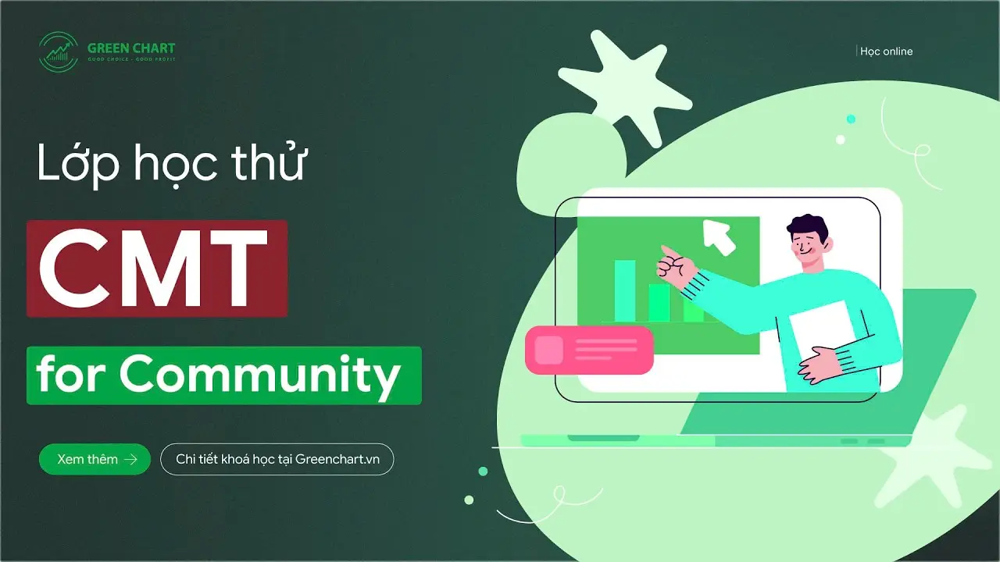
Xem 47:24Một buổi học trọn vẹn, đúng cách Green Chart dạy trong khoá chính.
Việc một người mới bắt đầu có thể học và giao dịch sinh lời ổn định trên thị trường là hoàn toàn có thể làm được. Tuy nhiên, bên cạnh việc học những kiến thức đúng, cần một thái độ thực hành nghiêm túc và một quá trình trải nghiệm đủ lâu, tối thiểu từ 06 tháng đến 1 năm.
Khóa học được thiết kế với ngôn ngữ dễ hiểu và tránh lạm dụng thuật ngữ chuyên ngành, phù hợp với mọi đối tượng. Học viên đến từ nhiều lĩnh vực như kỹ sư công nghệ thông tin, dược sỹ, giáo viên, MC truyền hình.
Green Chart là đơn vị đầu tiên và duy nhất cung cấp trọn bộ khóa luyện thi CMT Level 1-2-3 tại Việt Nam. Khóa Level 2 có học phí ưu đãi riêng cho học viên đã học Level 1 tại Green Chart.
Khoá học giảng bằng tiếng Việt; tài liệu luyện thi vẫn bằng tiếng Anh để quen với đề thật. Câu hỏi CMT Level 1 và 2 là trắc nghiệm, chỉ cần đọc hiểu tiếng Anh cơ bản (TOEIC khoảng 500).
Green Chart liên hệ tư vấn lộ trình và lịch khai giảng phù hợp trong 24 giờ.
Học CMT ở Việt Nam cùng Green Chart, đơn vị đầu tiên và duy nhất luyện thi đủ 3 level. Mỗi level là một bậc: nền tảng, ứng dụng, rồi xây dựng hệ thống giao dịch.
Bậc học của bạn
Cuộn xuống: từng thẻ dừng lại dưới menu, thẻ sau trượt lên đè thẻ trước.
27 buổi học lý thuyết, ôn tập, hướng dẫn thực hành và 02 buổi luyện đề thi thử. Giáo trình 12 chương.
24 buổi, giáo trình 12 chương. Học phí ưu đãi riêng cho học viên đã học Level 1 tại Green Chart.
24 buổi, giáo trình 8 chương. Bậc cuối của lộ trình CMT.
Đừng để tiếng Anh chuyên ngành trở thành rào cản trên hành trình chinh phục chứng chỉ CMT.
Quản trị rủi ro, tâm lý giao dịch và phân tích cổ phiếu.
Phần lớn trader thua không vì thiếu chuyên môn hay phương pháp kỹ thuật, mà vì không có hệ thống bảo vệ vốn và không kiểm soát được bản thân khi thị trường đi ngược kỳ vọng.
Nền tảng vững chắc về phân tích cơ bản và định giá cổ phiếu, định hướng cách tích hợp hiệu quả vào hệ thống giao dịch hiện có.
Trong bối cảnh thị trường chứng khoán, phái sinh và các thị trường tài chính khác ngày càng phát triển, nhu cầu học CMT ở Việt Nam đang tăng nhanh trong cộng đồng nhà đầu tư, trader và những người làm nghề phân tích thị trường. CMT (Chartered Market Technician) là chứng chỉ quốc tế uy tín hàng đầu về phân tích kỹ thuật.
Green Chart đã xây dựng trọn bộ ba khóa luyện thi CMT Level 1, Level 2 và Level 3, giúp học viên tại Việt Nam tiếp cận chương trình chuẩn quốc tế ngay trong nước.
(Bản demo rút gọn. Trên trang thật giữ nguyên toàn bộ bài viết, kể cả phần giới thiệu Level 1, 2, 3.)
Green Chart liên hệ tư vấn lộ trình và lịch khai giảng phù hợp trong 24 giờ.
Học phân tích kỹ thuật cùng CMT Charterholder, nền tảng của phân tích kỹ thuật.
27 buổi học lý thuyết, ôn tập, hướng dẫn thực hành và 02 buổi luyện đề thi thử. Toàn bộ giáo trình, slide, bài tập và đề thi thử được tặng kèm miễn phí.
Theo giáo trình CMT Level 1. Cuộn để đường thời gian sáng dần, bấm từng học phần để xem chủ đề.
Code of Ethics & Standards of Professional Conduct.
Hướng dẫn xây dựng hệ thống giao dịch theo xu hướng (Trend Following Trading System).
“Kỹ năng đọc hiểu tài liệu & Đề thi CMT” dành cho học viên cần bổ sung nền tiếng Anh trước khi học và thi chứng chỉ.
Không giới hạn thời gian, miễn là Green Chart còn tổ chức lớp. Chỉ cần xác nhận đã đăng ký thi kỳ gần nhất với CMTA.
20h tối thứ 4 và chủ nhật hàng tuần, học online linh hoạt.
Do Green Chart biên soạn dựa trên giáo trình chuẩn của chương trình CMT.
Cổ phiếu, forex, hàng hoá, crypto.
CMT Charterholder · Founder & CEO Green Chart
Học phí đã bao gồm trọn bộ giáo trình CMT bản mới nhất, bộ question bank và đề luyện thi do Green Chart biên soạn theo tiêu chuẩn chương trình CMT, cùng các buổi chữa bài tập và luyện đề thi thử.
Học viên tương tác trực tiếp với giảng viên qua room học online thay vì ngồi trên lớp, đảm bảo chất lượng nội dung và độ tương tác tương đương học offline.
Được, hoàn toàn miễn phí và không giới hạn thời gian, miễn là Green Chart còn mở lớp. Chỉ cần xác nhận đã đăng ký thi hoặc thi lại kỳ gần nhất với Hiệp hội CMTA.
Green Chart liên hệ tư vấn lộ trình và lịch khai giảng phù hợp trong 24 giờ.
Green Chart là đơn vị tiên phong tổ chức các khoá đào tạo chứng chỉ phân tích kỹ thuật CMT (Chartered Market Technician) tại thị trường Việt Nam.
Chúng tôi là ai
Bên cạnh trọn bộ khoá luyện thi CMT, Green Chart tổ chức các khoá kỹ năng và duy trì thư viện kiến thức miễn phí.
Serious Education for Serious Traders. Đầu tiên và duy nhất tại Việt Nam luyện thi đủ 3 level CMT.
CMT Charterholder · Founder & CEO Green Chart
Green Chart liên hệ tư vấn lộ trình và lịch khai giảng phù hợp trong 24 giờ.


Playlist về CMT · 11 video.
Green Chart liên hệ tư vấn lộ trình và lịch khai giảng phù hợp trong 24 giờ.
Những câu hỏi các anh chị thường hỏi về khoá luyện thi CMT Level 1, 2 và 3.
Trải qua kinh nghiệm 12 năm giao dịch và hơn 07 năm giảng dạy về giao dịch, chúng tôi nhận thấy việc một người mới bắt đầu có thể học và giao dịch sinh lời ổn định là hoàn toàn có thể làm được.
Tuy nhiên, bên cạnh việc học những kiến thức đúng, cần một thái độ thực hành nghiêm túc và một quá trình trải nghiệm đủ lâu, tối thiểu từ 06 tháng đến 1 năm.
Khóa học được thiết kế với ngôn ngữ dễ hiểu và tránh lạm dụng thuật ngữ chuyên ngành, phù hợp với mọi đối tượng. Học viên đến từ nhiều lĩnh vực như kỹ sư công nghệ thông tin, dược sỹ, giáo viên, MC truyền hình.
Hiện nay, khóa học mới chỉ tổ chức được dưới hình thức offline tại Hà Nội, do đó học viên ở nước ngoài hay các tỉnh thành khác tham gia online. Học viên vẫn tương tác trực tiếp với giảng viên qua room học online.
Sau khi kết thúc 08 buổi học lý thuyết, học viên được mời vào nhóm thực hành và tham gia cùng giảng viên: theo dõi diễn biến thị trường hàng ngày, hàng tuần, phân tích cơ hội giao dịch, thực hành đặt lệnh và trải nghiệm tâm lý giao dịch trên thị trường thật.
Các khóa học của Green Chart đều áp dụng chính sách miễn phí học lại trọn đời.
Green Chart có các video miễn phí về một số học phần trong khoá học để bạn cảm nhận kiến thức và cách giảng bài.
Học phí đã bao gồm trọn bộ giáo trình CMT bản mới nhất, bộ question bank và đề luyện thi do Green Chart biên soạn, cùng các buổi chữa bài tập và luyện đề thi thử.
Green Chart là đơn vị đầu tiên và duy nhất cung cấp trọn bộ khóa luyện thi CMT Level 1-2-3 tại Việt Nam. Khoá Level 2 có học phí ưu đãi riêng cho học viên đã học Level 1 tại Green Chart.
Khoá học giảng bằng tiếng Việt; tài liệu luyện thi vẫn bằng tiếng Anh. Câu hỏi CMT Level 1 và 2 là trắc nghiệm, chỉ cần đọc hiểu tiếng Anh cơ bản (TOEIC khoảng 500).
Được, miễn phí và không giới hạn thời gian, miễn là Green Chart còn mở lớp. Chỉ cần xác nhận đã đăng ký thi hoặc thi lại kỳ gần nhất với Hiệp hội CMTA.
Green Chart tổ chức buổi học thử CMT miễn phí “CMT for Community” trước mỗi kỳ thi; bạn có thể xem lại video của buổi học thử.
Học phí đã bao gồm trọn bộ giáo trình CMT bản mới nhất, bộ question bank và đề luyện thi do Green Chart biên soạn, cùng các buổi chữa bài và luyện đề thi thử.
Học viên tương tác hỏi đáp trực tiếp với giảng viên, đảm bảo chất lượng và độ tương tác tương đương học offline.
Được, miễn phí và không giới hạn thời gian, miễn là Green Chart còn mở lớp.
Học phí đã bao gồm trọn bộ giáo trình CMT bản mới nhất, bộ question bank và đề luyện thi do Green Chart biên soạn, cùng các buổi chữa bài và luyện đề thi thử.
Khoá học giảng bằng tiếng Việt; tài liệu luyện thi vẫn bằng tiếng Anh để học viên quen với đề thi thật.
Có buổi học thử “CMT for Community” trước mỗi kỳ thi; lịch đăng trên fanpage Green Chart, video xem lại trên kênh YouTube.
Green Chart liên hệ tư vấn lộ trình và lịch khai giảng phù hợp trong 24 giờ.
Tư vấn lộ trình học CMT, lịch khai giảng và học phí. Green Chart liên hệ lại trong 24 giờ.
Green Chart liên hệ tư vấn lộ trình và lịch khai giảng phù hợp trong 24 giờ.
Sách chứng khoán PDF và tài liệu tìm hiểu, ôn thi chứng chỉ CMT do Green Chart tổng hợp.
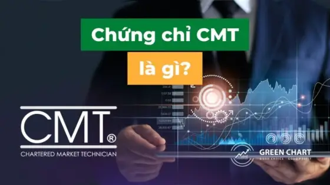
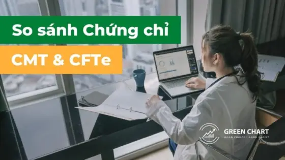
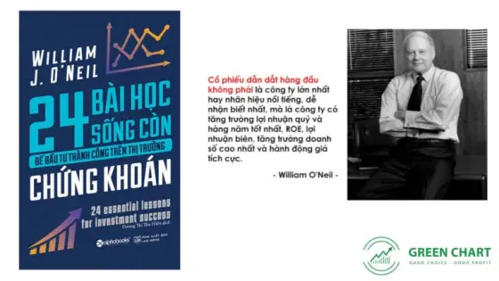
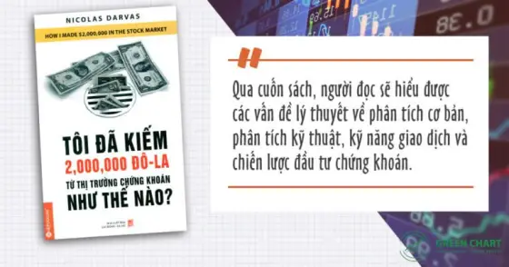
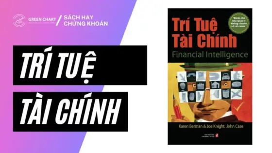
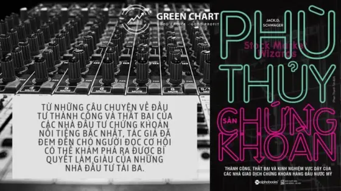
Green Chart liên hệ tư vấn lộ trình và lịch khai giảng phù hợp trong 24 giờ.
Cổ phiếu, phân tích cơ bản, giao dịch, danh mục và phái sinh, viết cho nhà đầu tư Việt Nam.
12 bài viết trong 3 nhóm: Tìm hiểu & đăng ký thi CMT, Phân tích kỹ thuật chuẩn CMT, Technical Insights.
44 bài viết trong 6 nhóm: Dow, biểu đồ và nến Nhật, xu hướng và mô hình giá, chỉ báo, Fibonacci và Elliott, hệ thống giao dịch.
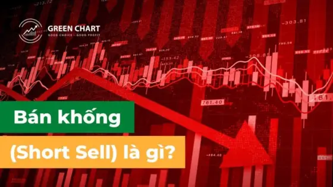
Green Chart liên hệ tư vấn lộ trình và lịch khai giảng phù hợp trong 24 giờ.
Các playlist bài giảng miễn phí của Green Chart về chứng khoán phái sinh và tự học chứng khoán từ A–Z.
 Bài 1: Hợp đồng tương lai là gì?10:05 · Chứng khoán phái sinh từ A – ZXem trên YouTube
Bài 1: Hợp đồng tương lai là gì?10:05 · Chứng khoán phái sinh từ A – ZXem trên YouTube
 Lớp học thử Stock Trading for a Living1:04:50 · Học chứng khoán từ A – ZXem trên YouTube
Lớp học thử Stock Trading for a Living1:04:50 · Học chứng khoán từ A – ZXem trên YouTube
 Kinh nghiệm học và thi chứng chỉ CMT11:26 · update 2025Xem trên YouTube
Kinh nghiệm học và thi chứng chỉ CMT11:26 · update 2025Xem trên YouTube
 Những câu hỏi thường gặp về CMT17:43 · cập nhật 2026Xem trên YouTube
Xem 10:05
Những câu hỏi thường gặp về CMT17:43 · cập nhật 2026Xem trên YouTube
Xem 10:05
Bắt đầu với Bài 1: Hợp đồng tương lai là gì?
Xem 1:04:50
Mở đầu bằng lớp học thử khoá Stock Trading for a Living.
Green Chart liên hệ tư vấn lộ trình và lịch khai giảng phù hợp trong 24 giờ.
12 bài viết trong chuyên mục Chứng Khoán Phái Sinh của Green Chart.
Chứng quyền là một hợp đồng quyền chọn (Options) cổ phiếu, mà người sở hữu có quyền (nhưng không có nghĩa vụ) mua hoặc bán cổ phiếu tại một mức giá được xác định, tại một thời điểm đã được ấn định…
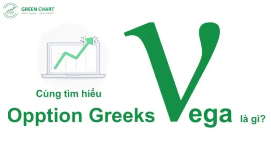
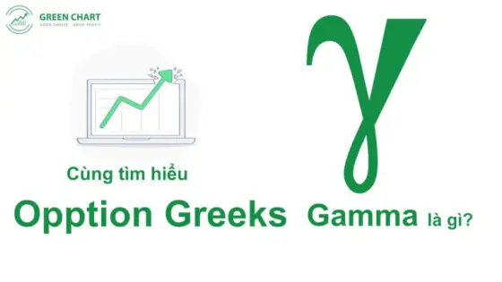
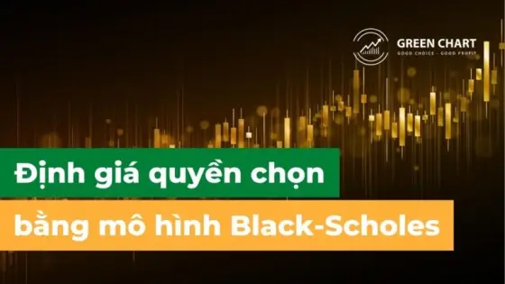
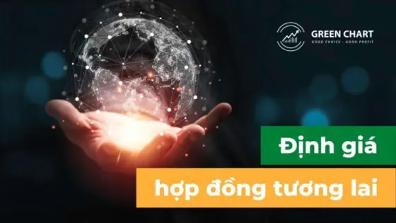
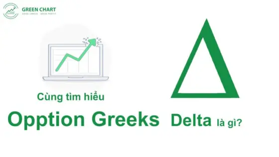
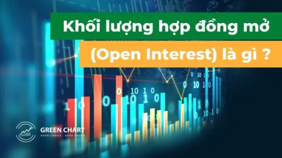
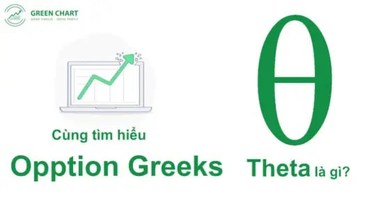
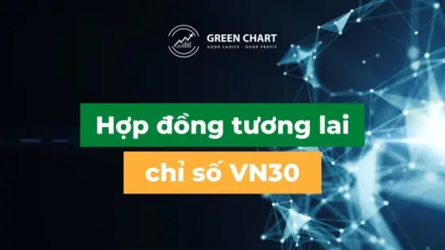
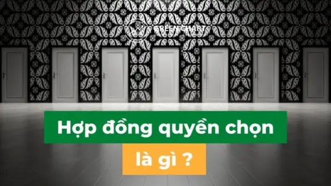
Stock Trading For A Living. 5 buổi, online qua Google Meet.
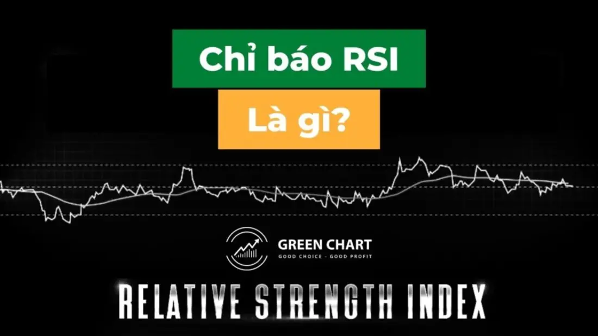
Việc kết hợp một bộ chỉ báo kỹ thuật bao gồm một chỉ báo dao động (ví dụ như Stochastic, Momentum hay RSI) với một chỉ báo xu hướng như đường trung bình động – MA là cách tiếp cận thông thường khi xây dựng một hệ thống giao dịch.
Tuy nhiên, bài viết này sẽ cung cấp một góc nhìn khác khi chỉ sử dụng riêng chỉ báo RSI kết hợp với những khái niệm biểu đồ cơ bản để đưa ra quyết định giao dịch hiệu quả. Cũng giống như nhiều nhà giao dịch theo phong cách tối giản khác, tôi có xu hướng sử dụng rất ít chỉ báo (Indicator) trong biểu đồ kỹ thuật của mình, và RSI là một trong những chỉ báo hoạt động tốt nhất dành cho các nhà giao dịch theo kiểu Swing trading.
RSI (Relative Strength Index) hay Chỉ báo sức mạnh tương đối là một loại chỉ báo động lượng được sử dụng phổ biến trong phân tích kỹ thuật, giúp đo lường sức mạnh của giá. RSI được phát minh vào năm 1968 bởi J. Welles Wilder.
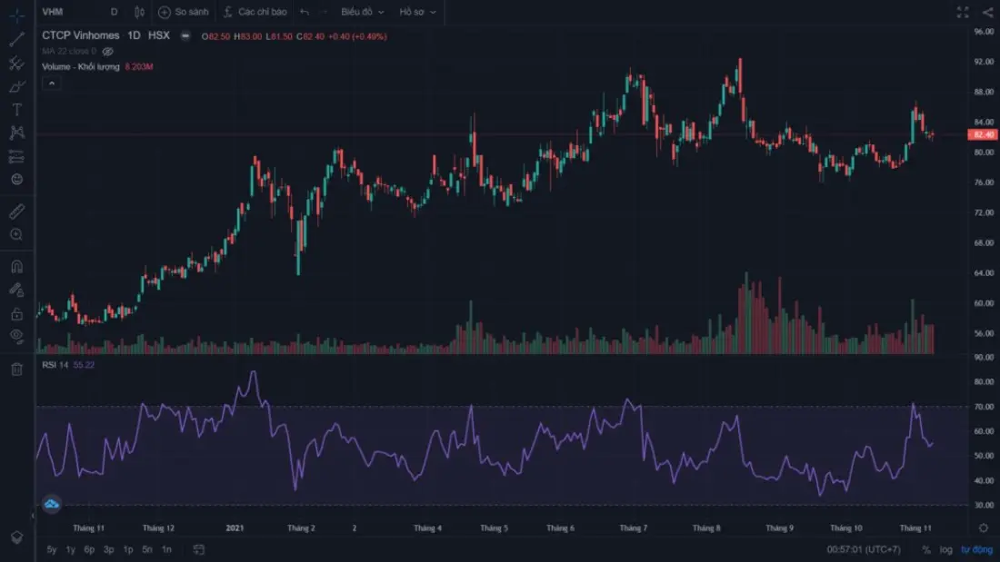
Giống như nhiều chỉ báo khác, RSI sử dụng dữ liệu đầu vào cơ bản là giá, cụ thể là dữ liệu giá của X phiên (nến) gần nhất trước đó. Giá trị X phổ biến nhất là 14 phiên – RSI (14), được mặc định bởi tác giả Wilder.
Công thức của chỉ báo RSI như sau:
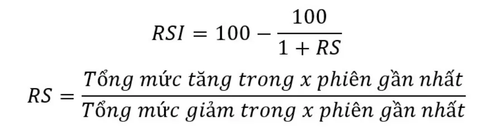
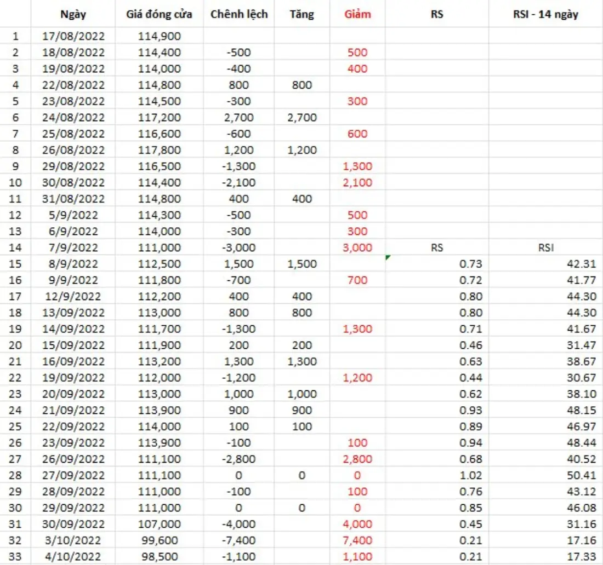
Là một chỉ báo động lượng, RSI so sánh sức mạnh của một cổ phiếu hay một loại hàng hóa vào những ngày giá tăng với sức mạnh của nó vào những ngày giá giảm. RSI sẽ cung cấp sự xác nhận (Confirmation) nếu xu hướng hiện tại của giá đồng pha với xu hướng tăng/giảm của RSI. Chính vì vậy, RSI được sử dụng cùng với các chỉ báo kỹ thuật khác có thể giúp nhà giao dịch đưa ra quyết định sáng suốt hơn.
Nếu liên hệ một chút với kiến thức vật lý, RSI có thể được coi là gia tốc của đồ thị giá. Khi giá có số phiên tăng nhiều hơn số phiên giảm trong một khoảng thời gian nhất định, RSI sẽ ở mức cao để báo hiệu một đà tăng mạnh mẽ của giá, và ngược lại.
RSI xác nhận xu hướng tăng khi:
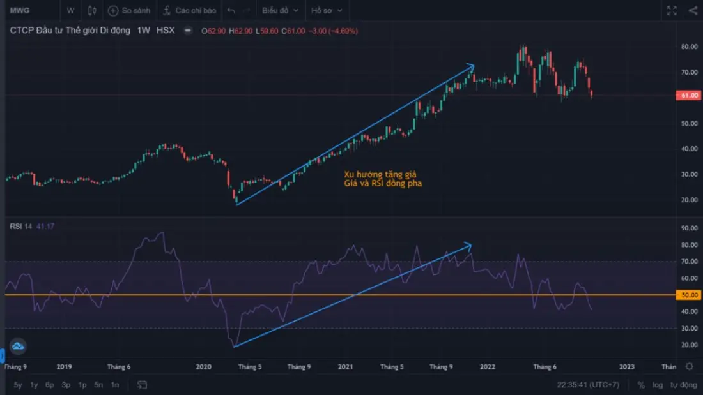
RSI xác nhận xu hướng giảm khi:
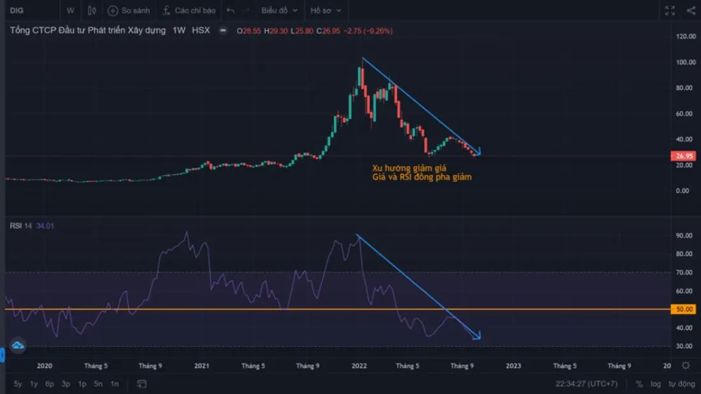
RSI cao thể hiện lực mua mạnh và RSI thấp báo hiệu một lực bán mạnh. Khi đường RSI đạt một mức cao nhất định, thường là > 70, chỉ báo được coi là “quá mua”, cảnh báo một nhịp tăng không bền vững và giá có thể sớm đảo chiều giảm. Ngược lại, khi RSI thường < 30, chỉ báo được coi là “quá bán”, và giá có thể sắp đảo chiều tăng.
Tuy nhiên, việc RSI đi vào vùng quá bán không đảm bảo giá sẽ tăng trở lại trong tương lai gần. Ví dụ dưới đây minh họa RSI nằm trong vùng quá bán trong một thời gian dài và giá cổ phiếu vẫn tiếp tục giảm.
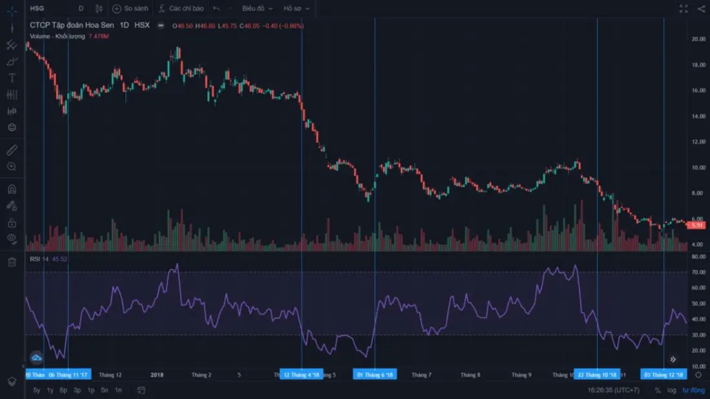
Vì vậy, khi dùng vùng quá mua hoặc quá bán để xác định điểm mua bán, các điểm mua tốt nhất xảy ra khi RSI tăng lên và xác nhận thoát khỏi vùng quá bán (quay về trên mức 30). Các điểm bán tốt nhất là lúc RSI giảm và xác nhận thoát khỏi vùng quá mua (quay về dưới mức 70). Chiến lược này hoạt động hiệu quả nhất khi thị trường đi ngang (Sideway).
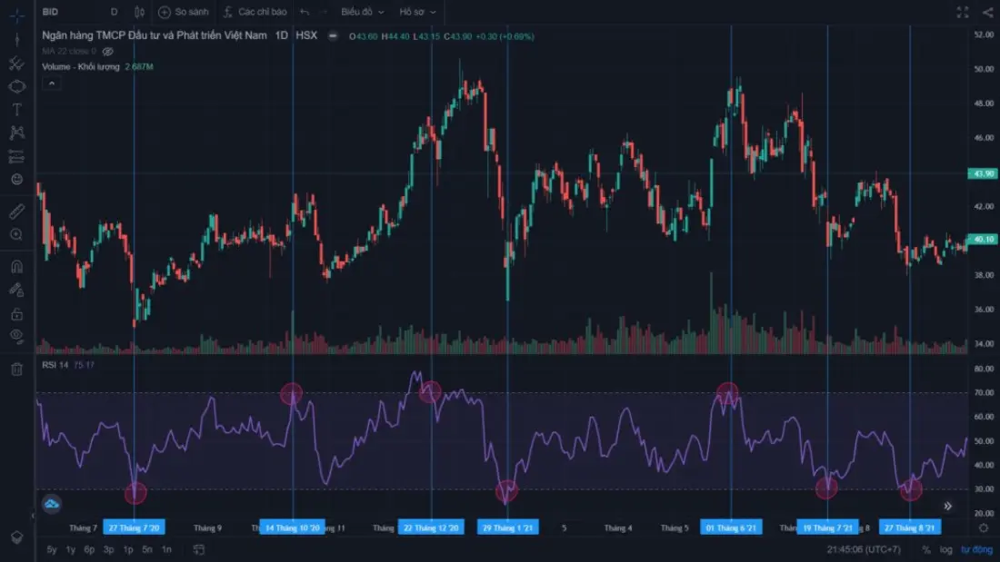
Đối với thị trường có xu hướng, việc tốt nhất là giao dịch theo xu hướng và đừng cố chống lại nó. Khi cổ phiếu đang trong xu hướng tăng, bạn có thể tìm các điểm mua dựa theo vùng quá bán của RSI, nhưng không nên dùng vùng quá mua cho các điểm bán. Xác suất thành công sẽ cao hơn nếu giá đang ở một vùng hỗ trợ mạnh.
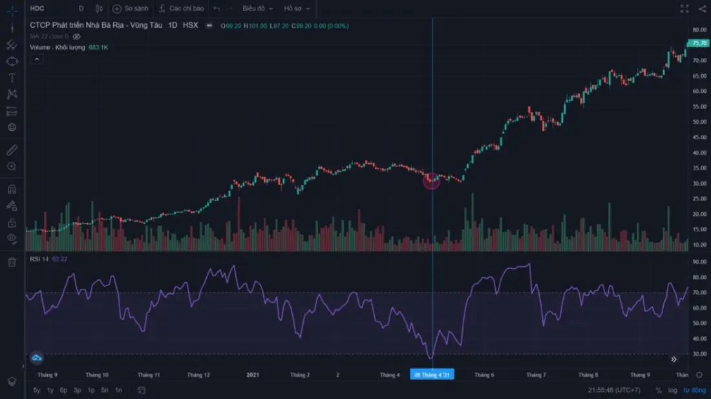
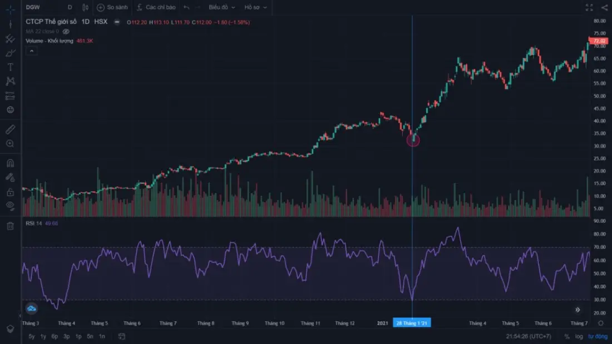
Thông thường, giá cổ phiếu tăng phải đi kèm với “sự xác nhận” (confirmation) đến từ động lượng (RSI cũng phải tăng theo), và ngược lại. Tuy vậy, có một số trường hợp ngoại lệ, được gọi là phân kỳ.
Khi giá phá đỉnh và xác nhận xu hướng tăng nhưng RSI thất bại trong việc tạo đỉnh mới cao hơn, động lượng lần này thấp hơn lần tạo đỉnh trước, báo hiệu xu hướng tăng không bền vững. Đó là dấu hiệu của RSI phân kỳ âm; nhà giao dịch có thể bắt đầu chuẩn bị một lệnh bán.
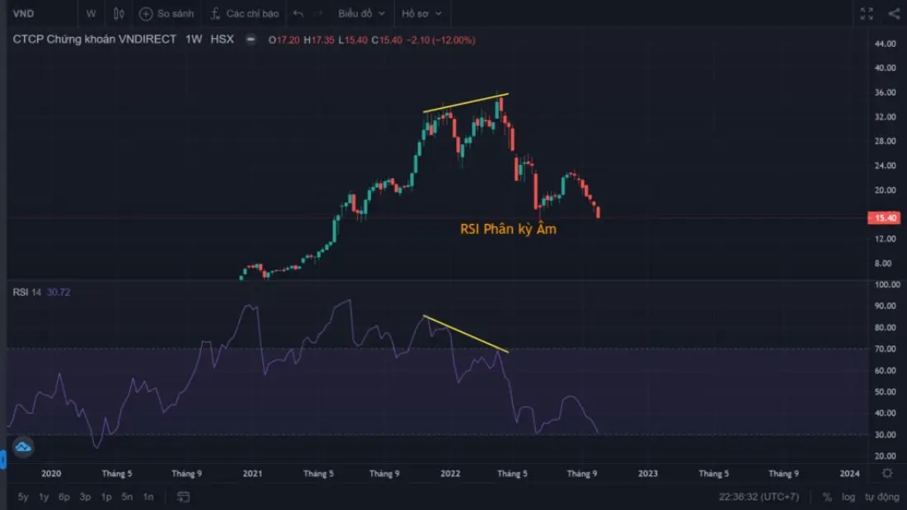
Chiều ngược lại, khi giá phá đáy và xác nhận xu hướng giảm nhưng RSI không tạo đáy mới thấp hơn, động lượng giảm đã cạn kiệt và lực mua có thể sớm quay lại. Đó là dấu hiệu của RSI phân kỳ dương (hay còn gọi là Hội tụ), cũng dùng để xác định điểm mua cổ phiếu.
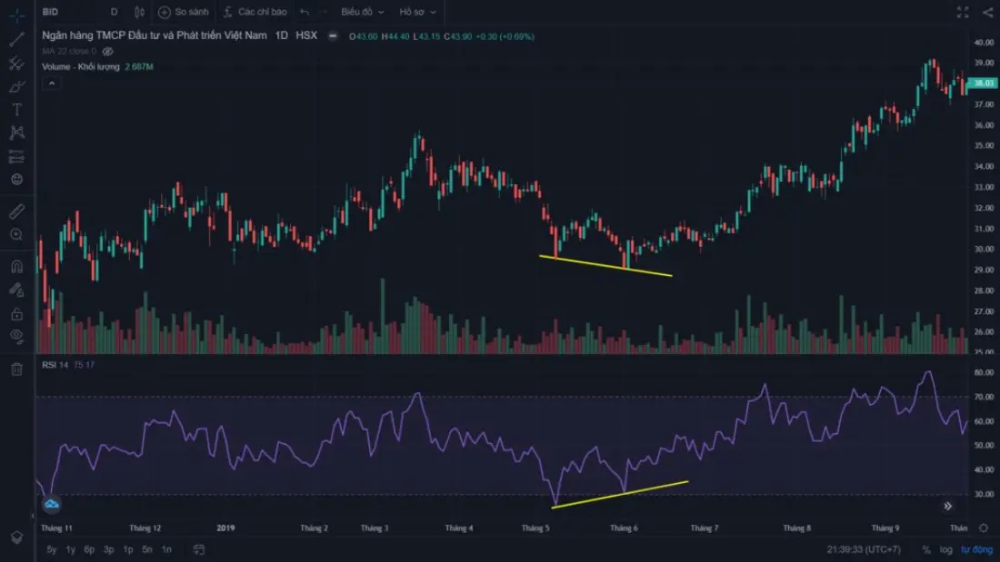
Đây là một cách phân tích rất hay của tác giả Wilder: khi RSI tiến vào vùng quá mua/quá bán, ông coi Failure Swings là dấu hiệu mạnh mẽ cho thấy sự đảo chiều sắp xảy ra. Failure Swings độc lập với hành động giá (Price Action), chỉ tập trung vào RSI và bỏ qua khái niệm phân kỳ.
Một Failure Swing xu hướng tăng (Bullish Failure Swing) gồm 4 giai đoạn:
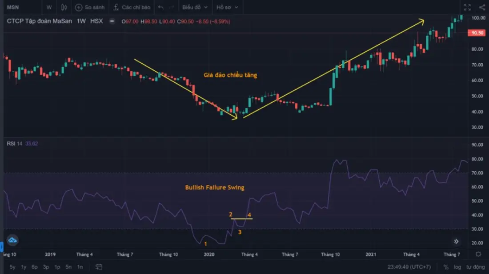
Tương tự, một Failure Swing xu hướng giảm (Bearish Failure Swing) gồm 4 giai đoạn:
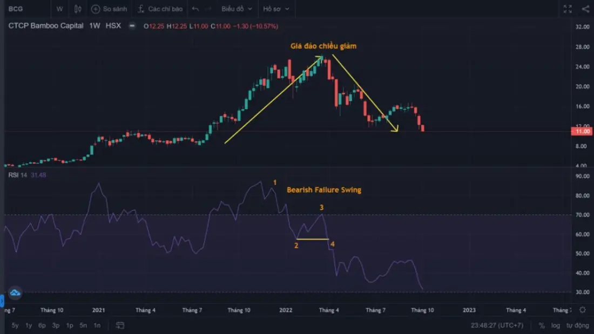
27 buổi học lý thuyết, luyện đề và thi thử. Miễn phí giáo trình, bộ câu hỏi và đề thi thử. Học lại miễn phí.
Happy trading!
Green Chart liên hệ tư vấn lộ trình và lịch khai giảng phù hợp trong 24 giờ.